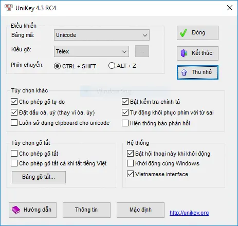

Unikey
Bộ gõ tiếng Việt phổ biến nhất trên Windows. Nhỏ gọn, miễn phí, hỗ trợ mọi kiểu gõ.

Unikey là bộ gõ tiếng Việt mã nguồn mở, nhỏ gọn và cực kỳ phổ biến tại Việt Nam. Đây là phần mềm không thể thiếu trên bất kỳ máy tính Windows nào của người Việt.
Với Unikey, bạn có thể gõ tiếng Việt trong bất kỳ ứng dụng Windows nào một cách dễ dàng. Phần mềm hỗ trợ tất cả các kiểu gõ phổ biến như Telex, VNI, VIQR và nhiều bảng mã khác nhau. Unikey còn tích hợp công cụ chuyển đổi font chữ tiện lợi, giúp bạn chuyển đổi văn bản giữa các bảng mã một cách nhanh chóng.